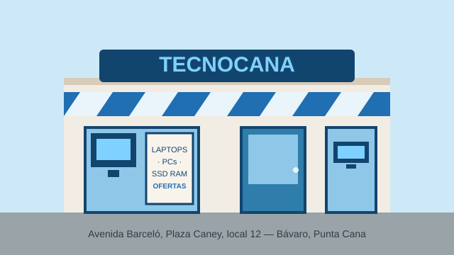

Servicios del taller
Estos son los trabajos que hacemos a diario. Si tu problema no está en la lista, tráelo igual: el diagnóstico es gratis.
-
Reparación de laptops
- Cambio de pantalla y bisagras
- Cambio de teclado y batería
- Puertos de carga y botones de encendido
-
Mantenimiento
- Limpieza interna y cambio de pasta térmica
- Formateo e instalación de Windows
- Migración de disco mecánico a SSD
-
Soporte a negocios
- Redes LAN y cableado estructurado
- Puntos de venta e impresoras fiscales
- Respaldo y recuperación de información
Los 5 accesorios más pedidos
La cuenta regresiva del mes, del puesto 5 al 1:
- Mouse inalámbrico
- Hub USB de 4 puertos
- Base enfriadora para laptop
- Memoria RAM de 8 GB
- Disco SSD de 480 GB
Glosario rápido
Los términos que más preguntan en el mostrador, explicados sin tecnicismos:
- SSD
- Disco sin partes móviles; hace que la PC encienda y abra programas en segundos.
- RAM
- Memoria de trabajo temporal. Más RAM, más programas abiertos a la vez sin lentitud.
- GPU
- Tarjeta de video. Importa para juegos, diseño y edición; para ofimática no hace falta dedicada.
- PSU
- La fuente que alimenta la PC. Una genérica mala puede quemar todo lo demás.
- BIOS
- El programa base de la placa madre; arranca antes que Windows y configura el hardware.
Tip: para ver las especificaciones de tu equipo presiona
Windows + Pausa. Si al encender sale
INACCESSIBLE_BOOT_DEVICE, el disco está fallando: apaga y tráelo.
Tabla de precios del taller
Ir directo al mapa · Descargar lista de precios en PDF
| Categoría | Servicio | Precio (RD$) | Tiempo estimado |
|---|---|---|---|
| Mantenimiento | Limpieza interna + pasta térmica | 1,500 | Mismo día |
| Formateo + instalación de Windows | 2,000 | Mismo día | |
| Reparación | Cambio de pantalla de laptop | 3,500* | 2–3 días |
| Cambio de teclado | 2,500* | 2–3 días | |
| Diagnóstico | Evaluación completa con informe | Gratis | Mismo día |
| Armado | Ensamble de PC pieza por pieza | 2,800 | 3–5 días |
| * El precio no incluye el repuesto; se cotiza aparte. | Estudiantes UCE: 15% de descuento con carnet. | ||
+----------------------------------+
| TECNOCANA · ORDEN DE SERVICIO |
+----------------------------------+
| [ ] Diagnóstico completo |
| [ ] Presupuesto aprobado |
| [ ] Repuesto en inventario |
| [ ] Equipo probado 24 horas |
+----------------------------------+
Nuestro local y cómo llegar
